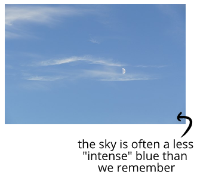
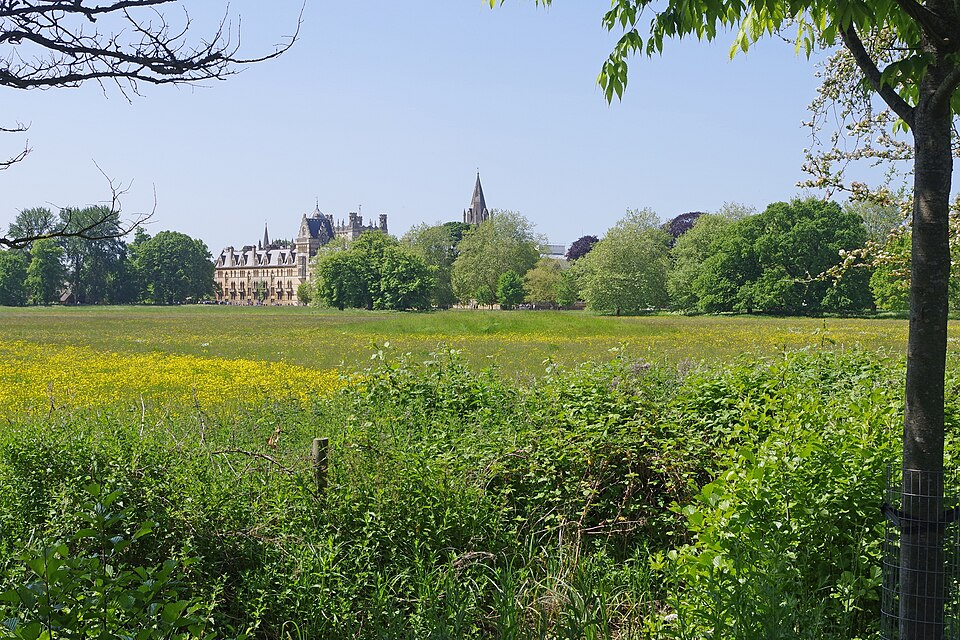
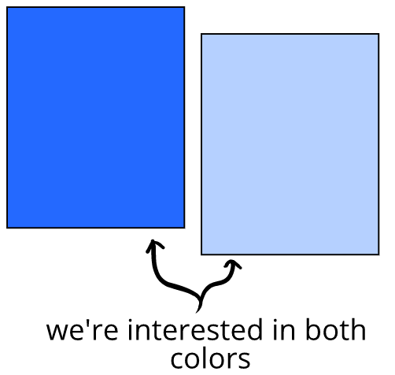
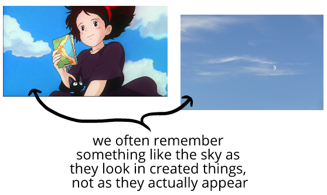

At first, it can seem like we should care more about high-intensity humor than low-intensity humor—but that's not really the case. We can see this by thinking about "low-intensity" colors.
In our heads, the sky is often the most vivid blue imaginable. But when we actually look at the color of the sky, it's a pale and thin blue:
It's not that the experience of seeing the sky can't be vivid—it's that the sky can be vivid and be pale and thin.
The same is true all across our lives. When we have vivid experiences, we assume there were more vivid colors than there actually were:
When asked to remember a beautiful field, we'd probably remember "intense" colors. But when we actually take a
Similarly, while we may remember the field as draped in yellow from flowers, that effect was actually created by just few scattered flowers—since it doesn't always take much yellow to create a vivid impression.
That's because a lot of our assumptions about the association between color, vividness, and experiences aren't quite right—and we have to switch from describing what we
In other words, we'd want a book about color to help us think about how colors and the world worked everywhere—and to help us think accurately about all "intensities" of color.
A study of only "high-intensity" colors would remove us from common experiences, like living under the sky—and mainly equip us to think about a narrow range of things.
This is all true of humor as well. While belly laughter may stand out in our memories, the majority of the humor in our lives actually happens at a low-intensity.
Low-intensity colors can seem washed out in a comedy, but be vivid in a field. In the same way, low-intensity humor can seem washed out in a
And in the same way just a bit of
Even though the orange is "less" compared to the blue, that doesn't mean the orange isn't relevant. To understand colors and make aesthetic decisions, we'd have to take the presence or absence of this bit of orange seriously.
Something similar happens for emotions.
This book will be focusing on humor everywhere, of any intensity—and focusing on understanding what that humor means. This will give us genuine understanding of humor as it happens anywhere and everywhere in the world.
That's it for this chapter!
Humor isn't just "on" or "off." Instead, it's something that has degrees of intensity. We can model